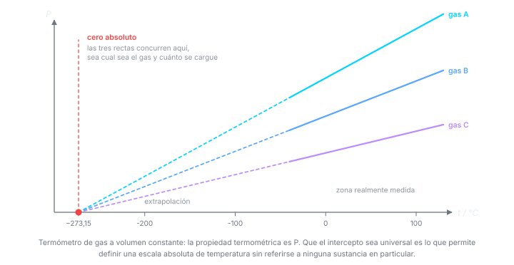
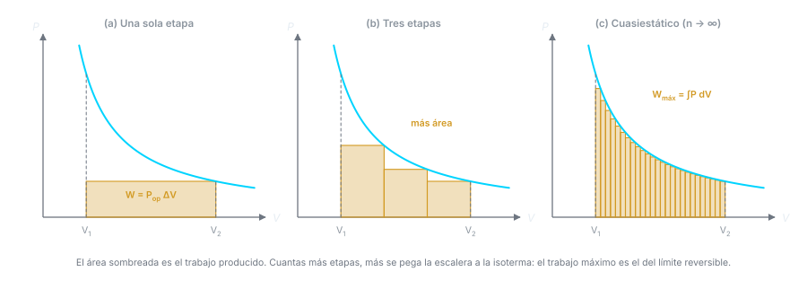

Clase 4: Ley Cero, Trabajo y Calor
Las definiciones que sostienen todo el resto del curso: sistema y entorno, la ley cero que hace medible la temperatura, y el trabajo de expansión — que resulta depender del camino y separa lo reversible de lo irreversible.
Temas que cubre
- Formas de energía: cinética, potencial, térmica, química, nuclear, eléctrica
- Definiciones: sistema, frontera, medio ambiente; sistemas abierto, cerrado y aislado
- Ley cero de la termodinámica y la definición operacional de temperatura
- Las cuatro leyes de la termodinámica y qué magnitud define cada una
- Termometría: propiedad termométrica, escalas empíricas y puntos fijos
- El termómetro de gas a volumen constante y la escala absoluta
- Enunciado de la primera ley para sistemas aislados y cerrados
- Definición termodinámica de trabajo y su convenio de signos
- Definición termodinámica de calor y su convenio de signos
- Trabajo de expansión contra presión de oposición: una, dos y varias etapas
- Trabajo de compresión y por qué cuesta más en una etapa que en varias
- Trabajo máximo (expansión) y mínimo (compresión): el límite cuasiestático
- Ciclo expansión–compresión: irreversible en un paso, reversible en infinitos pasos
Las cuatro leyes de un vistazo
Cada ley de la termodinámica existe para justificar que cierta magnitud está bien definida. Vale tenerlas juntas desde el principio, aunque el curso las vaya construyendo de a una.
- Ley cero — el equilibrio térmico es transitivo. Define la temperatura y hace posible el termómetro. Es la que se ve en esta clase.
- Primera ley — la energía del universo se conserva. Define la energía interna y, con ella, la entalpía. Clases 4 a 8.
- Segunda ley — la entropía del universo nunca disminuye. Define la entropía y dice qué procesos ocurren solos. Viene después en el programa.
- Tercera ley — la entropía de un cristal perfecto tiende a cero cuando . Fija el cero de la escala de entropías, y permite tabular absolutas.
La numeración es histórica, no lógica: la ley cero se enunció al final y se le puso ese número porque es anterior a todas las demás.
Conceptos clave
Sistema, frontera, entorno
Abierto: intercambia materia y energía. Cerrado: sólo energía. Aislado (adiabático): ninguna de las dos. Casi todo el curso trabaja con sistemas cerrados de masa fija.
Ley cero
Dos sistemas que no están en contacto pero sí en equilibrio térmico con un tercero, están en equilibrio térmico entre sí y tienen idéntica temperatura. Sin esto la temperatura no sería una propiedad bien definida — ni existirían los termómetros.
Propiedad termométrica
Cualquier magnitud que varíe de forma monótona con el estado térmico sirve para medir : la longitud de una columna de mercurio, la resistencia de un alambre, la presión de un gas a fijo. La escala depende de cuál se elija — y por eso hay que buscar una que no dependa de la sustancia.
Punto fijo
Un estado reproducible al que se le asigna un número por convenio. La escala moderna usa uno solo: el punto triple del agua, K exactos. Con un punto fijo y una propiedad termométrica queda definida toda la escala.
Trabajo
Cantidad que fluye por la frontera durante un cambio de estado y que puede usarse íntegramente para elevar un cuerpo en el entorno. Se manifiesta en el entorno: la medida es . Sólo existe durante el cambio de estado — no es una propiedad del sistema.
Calor
Lo que fluye entre dos sistemas al alcanzar el equilibrio térmico, desde el de mayor al de menor . También se mide por su efecto en el entorno: gramos de agua que suben un grado. Igual que el trabajo, sólo existe en la frontera y durante el proceso.
Presión de oposición
El trabajo se calcula con la presión externa, no con la del sistema. es arbitraria: la fija quien opera el pistón. Sólo en el límite cuasiestático se cumple .
Reversible vs. irreversible
Si el ciclo expansión–compresión deja el entorno modificado (), el proceso fue irreversible. Si el entorno vuelve exactamente a su estado original (), fue reversible. El sistema vuelve a su estado en ambos casos: lo que distingue es el entorno.
Fórmulas fundamentales







Qué hay que entender
- Convenio de signos de este curso: cuando el sistema produce trabajo (se expande), y la primera ley se escribirá . Muchos textos de física usan el convenio opuesto — al comparar con otras fuentes, revisar primero cuál usan.
- El trabajo se calcula con , la presión externa. Usar la presión del sistema es válido sólo si el proceso es cuasiestático.
- depende del camino: mismo estado inicial y final, distinto número de etapas, distinto trabajo. Esa es la razón de escribir y no .
- Más etapas más trabajo producido en expansión y menos trabajo gastado en compresión. El límite de infinitas etapas es el proceso reversible.
- La irreversibilidad se detecta mirando el entorno tras un ciclo completo, no el sistema: el sistema siempre vuelve a su estado.
- Ni ni son propiedades del sistema: no tiene sentido decir "este gas contiene tanto calor". Sólo existen mientras hay un cambio de estado en curso.